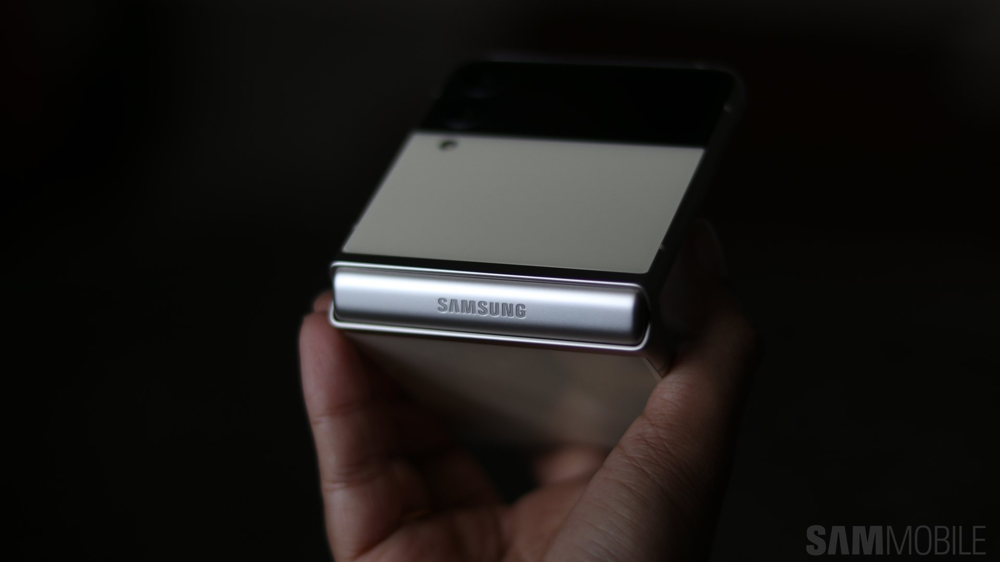

Home
Articles
Videos
Contact
About
Members
Login
SignUp
Videos
Galaxy Z Flip 3
Galaxy Note 20
Galaxy Z Fold
Galaxy S10 Plus
Galaxy Watch 4

 Galaxy Note 20
Galaxy Note 20  Galaxy Z Fold
Galaxy Z Fold Galaxy S10 Plus
Galaxy S10 Plus Galaxy Watch 4
Galaxy Watch 4